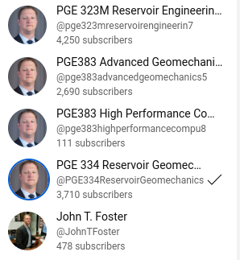
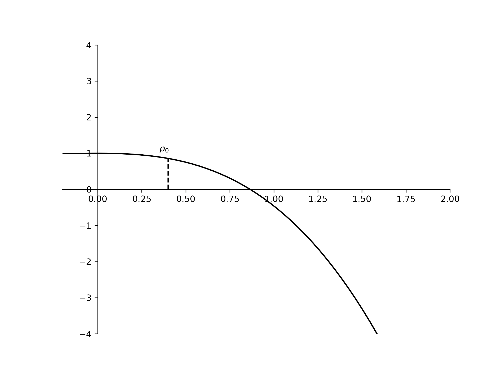

Teaching Statement
Overview I am a somewhat non-traditional teacher in that I rarely give a full 50/75 minute back-to-the-students blackboard-style lecture, preferring interactive project-based learning whenever possible. I have been an early adopter of the reverse classroom approach. I have developed three separate PGE courses (PGE 310/311, PGE 323M, PGE383 - High Performance Computing) using this teaching modality. As part of this approach, where the students watch recorded lectures posted before coming to class, I have posted 100s of lectures to YouTube which have been watched by others all over the world outside of the formal classroom. I currently have >10,000 subscribers across multiple channels I’ve created for each class (see Figure 1).

I believe this serves as a avenue for reputation enhancement, through others familiarizing themselves with my expertise on this topic and seeking out my other contributions in research, etc. Additionally, it creates a lasting catalogue of valuable reference material for my own students and researchers as well as other students at UT.
PGE 310/3111 is the only required undergraduate class I regularly teach, the others are electives and graduate courses. I typically have high enrollments in these elective classes (>20 students) and score well on my course evaluations. While the comments are ubiquitously supportive, I do get the occasional student comment that they don’t like the reverse classroom approach. These comments are difficult to address and are by far a minority. During the COVID19 pandemic, I did have a few semesters with below (my) average evaluations. I attribute this to the social and interactive “in class” part of these course being highly disadvantaged on Zoom. Since returning to in person classes post COVID, my course evaluation scores rebounded and even improved.
Reverse-classroom teaching. Over the last several years, I have developed three courses in a “reverse classroom” style and have automated the grading of assignments while providing rapid student assessment and feedback through the use of common open-source and web-based technologies that are in widespread use in software engineering. With the current excitement in all scientific and engineering disciplines regarding the use of data science and machine learning to solve problems, software engineering is becoming a highly marketable skill and soon will become an expectation of engineering graduates.
First, I’ll provide a little background on the structure of the “reverse classroom” courses. All traditional lecture material is recorded a priori and distributed before the students come to class. The lecture material consists of discussions and annotations over prepared slides, derivations, and live coding or software demonstration/tutorials. The videos are intended to be 6-10 minutes in length and are uploaded to a YouTube Channel dedicated to each class. A sample of these videos can be seen at the following links:
Each video has an associated quiz (3-5 questions) that is posted to CANVAS at least 24 hours before the class period where reinforcement assignments are used to deepen the students learning of the recorded material. The quizzes are intended to ensure the students watch the videos before they come to class. By taking to the time to perform some simple post-production on the videos, e.g. compressing/speeding the writing time for long derivations, the students can digest more material in less time than can be covered in a normal classroom setting, and, of course, with the ability to easily pause, rewind, and even listen at 1.5x or 2.0x speeds, the students can focus their learning in areas where confusion exists or clarification is required.
In class, we meet and work assignments, more than 20 assignments and several projects over the course of a semester. These classes are heavily focused on computer programming. PGE310/311 is an introductory course in numerical methods and computer programming. In 323M, we write a two-dimensional, two-phase fluid flow reservoir simulator over the course of a semester. In PGE383, we investigate different ways to speed up computations, through different parallelization schemes. The assignments are distributed and submitted via Github Classroom which uses the Github platform. Github is a cloud-based version control repository that is used ubiquitously by the open-source software community. A sampling of these assignments can be seen at the following links:
Additionally, I prepare the assignments in a way such that upon submission, they activate a continuous integration server (specifically Github Actions, also used ubiquitously by the open-source community) which pulls their submitted assignments into a prepared Linux virtual machine environment and runs their code against a set of prepared tests. The process is called “unit testing” or “integration testing” in software engineering. The continuous integration server immediately reports the results of the students tests to them. In the event they “fail”, the students can make corrections and continue to submit their assignments until the deadline.
I have written a piece of utility software that, using the continuous integration servers application programming interface, can “scrape” the students results and upload them directly to CANVAS, i.e. automatic grading. The assignments are designed to be completed in one class period. To encourage the students attendance and participation in class a small “bonus” credit is given for submitting the correct code before the end of class. During the Summer 2023, I received academic development funds from the Cockrell School of Engineering to further enhance these automated grading tools and will be releasing them as an open-source toolset for others to use as part of this enhancement project.
Technology. This flipped-classroom format may not be appropriate for all classes; however, I firmly believe in providing the students a menu of options for learning, especially when technology can provide this at little or no time-cost to me. In the classroom, when delivering traditional lectures I use a tablet peripheral interface to my laptop, where I can either develop lecture notes from scratch on blank paper or I can annotate prepared material in real-time. This makes the transition to prepared slides, demos, videos, web-based materials, or live-coding on the laptop during the lecture seamless. While delivering the lecture, I wear a microphone and screen-capture my computer desktop while simultaneously projecting to the screen in the lecture hall. At the end of class, I post the lecture notes developed in class along with a YouTube video of my lecture. Every lecture is recorded and available for the students future reference. I spend a little time post-producing the lecture videos to break-up the full lecture into 5–20 minutes topical segments. This post-production of the lectures makes it easier for the students to find the material they are interested in when reviewing for exams or working assignments. Additionally, this allows me to easily assemble an appropriately timed lecture in the advent of an absence in future semesters. Written comments from students over the years have overwhelmingly expressed gratitude for these reference videos and other materials, as not all students learn in the same manner, it provides a way to accommodate several different learning styles. I have used this methodology in several PGE courses at UT including PGE 379 Advanced Geomechanics and PGE 334 Reservoir Geomechanics. Like the other courses described previously, these videos are being watched by students around the world and have nearly ~1MM views between the two channels.
During the transition to remote learning during the Spring 2020 semester brought on by the COVID19 pandemic, I was asked by our department chair to form an ad hoc committee on to provide “best practices for online/distance learning”. We quickly developed a Wiki based on my experiences using various technologies for teaching, and I even personally recorded some “How To” videos to assist other faculty with this transition.
It has been my experience that many, if not most, engineering students are aided by visual learning tools and where appropriate I always try to incorporate these into my lectures. Figure 2 shows an animated computer visualization of tangent lines being drawn and new approximations being computed as a Newton’s method nonlinear solver converges to a root. This is one of many similar such visual aides that I developed (i.e. wrote the Python code) for a course on numerical methods, these notebooks are currently being developed to an open-source interactive book.
{kind=link}

Grading. I prefer a grading procedure which emphasizes homework assignments and projects that include applications to real engineering problems that the personal computer is needed to solve. As a working engineer, it was a rare case to encounter a problem that could be easily solved analytically; therefore, the computer plays a vital role in the education of my students just as it would assist a working engineer. I would say the primary educational goal for every course I teach is for the students to become better programmer/problem solvers through the use of scientific computing. I force the students to write computer code for nearly every assignment by designing problems that require iteration or full-field and/or multiple parameter space visualizations that are too difficult or intractable to work by hand. The students I have taught so far seem to respond well to these course designs.
I firmly believe that, just as no exceptions are ever made for engineering students who must use a slide-rule when preparing exam questions (i.e. it’s an expectation that all students have access to a scientific calculator), we have reached the time when the same philosophy should be applied with respect to the laptop computer. Since the Spring of 2016, when teaching PGE 334 Reservoir Geomechanics, I have allowed students to use their personal or department provided laptops during exams. In that course, there are a class of problems which require using rotation matrices to perform multiple coordinate transformations for the solution. If the students are asked to solve these problems on an exam, an assessment of their performance is influence by how quickly they can type matrices into their calculators. This is not in anyway an assessment of their understanding. I allowed them to program the coordinate transformations and bring their codes with them to class. I even provided verification solutions so they could check that their code was working properly before the exam. They could simply use the code during the problem solution with little worry about making algebraic or typographic errors and allowing them to focus on their physical understanding of the problem. The overall grades on otherwise very similar exams improved dramatically from the previous semester when I taught this course.
Evaluations. I have always been rated highly in student evaluations. The worst instructor evaluation I have received was in PGE323M during the Spring of 2020 (the semester we first transitioned to remote learning due to COVID), which has shown continuous improvement with ratings of 3.7, 4.4, and 4.68 in three times I’ve taught the course since. This improvement was in spite of requiring the students to program for every assignment (21 assignments and 3 projects)! I’ll also note that because of the larger enrollments and high response rates that all of my course evaluation scores represent good averages and are not artificially high due to only a few students responding.
Teaching Awards I believe I have demonstrated real innovation in the classroom, notably through the use of technology, and I was awarded the 2015 Society of Petroleum Engineers Faculty Innovative Teaching Award and the 2017 Department of Petroleum and Geosystems Engineering Faculty Teaching Award. Another accomplishment I am very proud of, but is admittedly not completely my own, was for my Teaching Assistant for PGE 323M in Fall 2015, Nkemakonam Egboga, to be awarded the William S. Livingston Outstanding Graduate Student Academic Employee Award by the Graduate Student Assembly. This award, for which I prepared the nomination package, is given to one graduate teaching assistant in the entire university. Nkemakonam was the first PGE student and the first Cockrell School of Engineering student to ever be given this award.
Footnotes
There was a name change that facilitated a course numbering change, but the course content did not change.↩︎